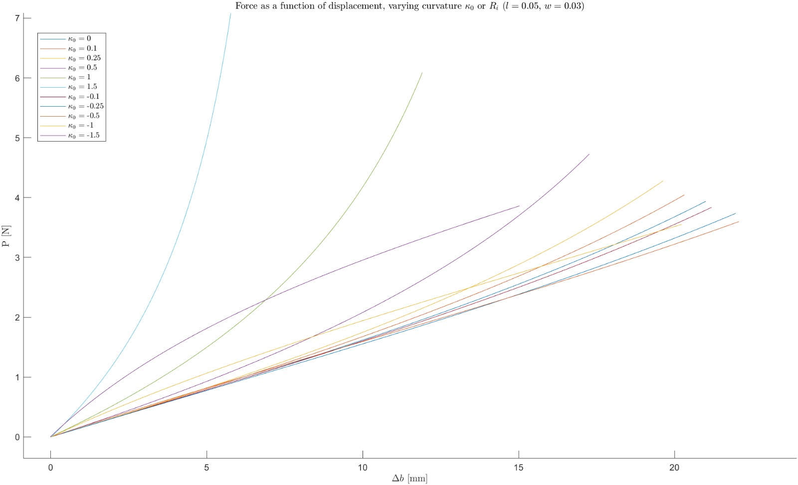
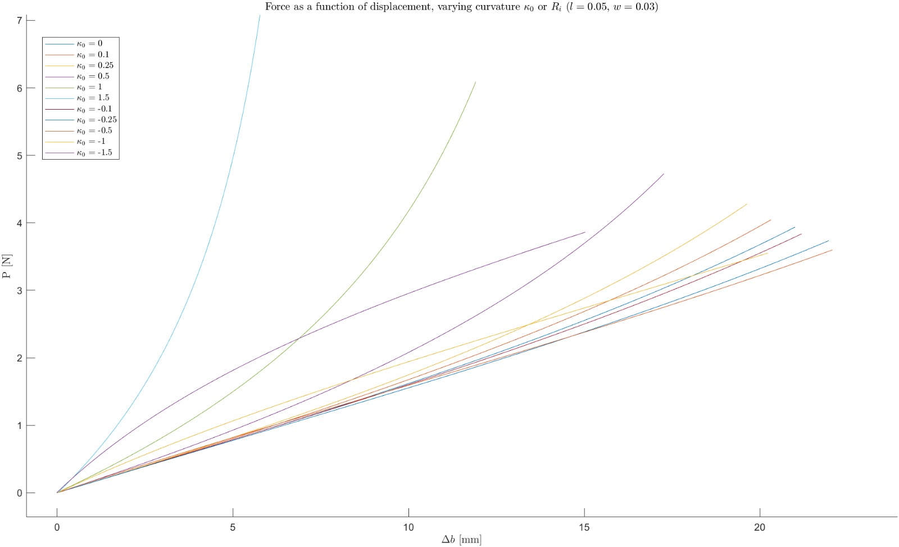

Currently pursuing a Master's in Mechanical Engineering at TU Delft, I focus on the track of High-Tech engineering, where the boundaries of technology are being pushed forward every day.
🤖 Compliant Jumper - Compliant Mechanism Paper
Over the course of this 5-month project, my team and I carried out the conceptualization, design, fabrication, and testing of a novel compliant jumping robot. The begginning of the design was marked by an iteration across multiple design solutions.
The first of these solution was characterized by a sturdy, bi-directional (not requiring self straightening) frame, with 3 four-bar linkages as a propelling and steering mechanism.Considerations regarding energy/mass efficiency led to a bio-inspired design, with a central body propelled by 3 legs. Having settled on this "spider" design, we shifter our focus to compliant solutions that would first of all allow for sufficient energy storage, and possibly achieve steerability through a single actuator.
A first iteration featured a simple compliant revolute joint acting as a knee for the leg:
This design was found to be too stiff, and even though a parallel configuration of multiple revolute joints was considered, steerability could not be achieved without multiple actuation solutions.
We then turned to non-linearities in known PRBMs to achieve steerability. The first legs design featured curved beams as sliding hips for rigid legs.
 

Through proper dimensioning of the curved flexures, a different peak force based on the dispalcement was achieved.
This solution was then modeled and fabricated:

Though promising, the curved legs were eventually discarded in favor of an off-set based design, were non linearity was generated by a delay in the activation of the legs. A non-stiff, sliding hip would allow for a differential loading of the right and left hip in the figure below. Once the slider hits the stopper, the right leg also starts loading the main hip. Making the right leg stiffer allows it to "catch up" to the left leg, and eventually provide a stronger force, leading to an inversion of the steering direction.
The final design reverted to a knee-based energy storage solution, which implemented a novel series-parallel compliant revolute joint:
A flexure was then added to serve as hinge in the hip position, connecting the slider to the upper half of the leg. This design solution was solved through a PRBM 3R model of the fix-fix long length flexures in the knee, and a cantilever beam with a force at the free end model for the hip.
The model was solved to obtain a force/displacement curve along the vertical movement direction of the feet. Tuning of the various stiffnesses led to a differential force based on the dispalcement:
Experimental and FEM analysis were conducted on the knee joints and on the complete legs. The results validated the 3R model, and, as expected, showed discrepancies regarding the hip assumptions. The PRBM value for hip spring k1 was then fitted to the experimental data:
After refitting, the PRBM-based force/displacement curves revealed a loss of steerability, due to leg 3 beeing the peak force contributor for any displacement.
The tested legs were nonetheless mounted on the main body, and a string-based charging mechanism was developed to allow for purely vertical loading:
Though not all initially set requirements were statisfied, proof of concept of single actuation steerability was shown, and project was considered an overall success
📌 Project 2
Description of project 2.
🌟 Extra Curriculars
🚗 Maggiolino
Details about my involvement in the Maggiolino project.
☀️ Solare
Details about my involvement in the Solare project.